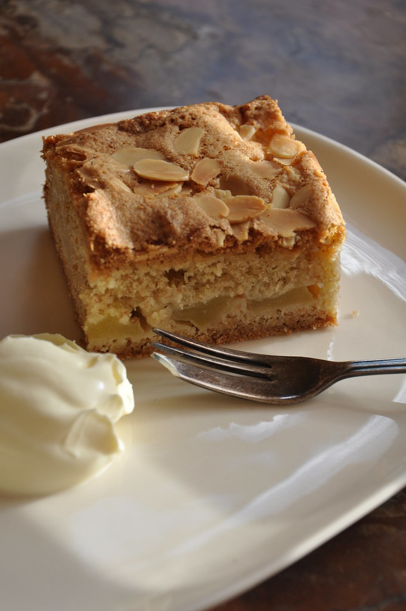

Apple Cake

Description
One of my favourite cakes. Quick to make. Best in the autumn and winter season. Disappears from plates in the blink of an eye.
Ingredients
- 1 package yellow cake mix
- 3 eggs
- 1 can apple can filling
- 3/4 cup packed brown sugar
- 1 tablespoon all-purpose flour
- 1 tablespoon butter
- 1 teaspoon ground cinnamon
- 1 cup chopped walnuts
Steps
- Preheat owen to 350 degrees (175 C). Grease and flour a 9x13 inchbaking pan.
- In a large bowl, mix together the cake mix, eggs and apple pie filling. Pour intothe prepared pan.
Combine the brown sugar, flour, butter, cinnamon and walnuts. Sprinkle over the top of the batter.
- Bake in preheated oven for 35 to 40 minutes, or until a toothpick inserted into the center of the cake
comes out clean. Allow to cool.